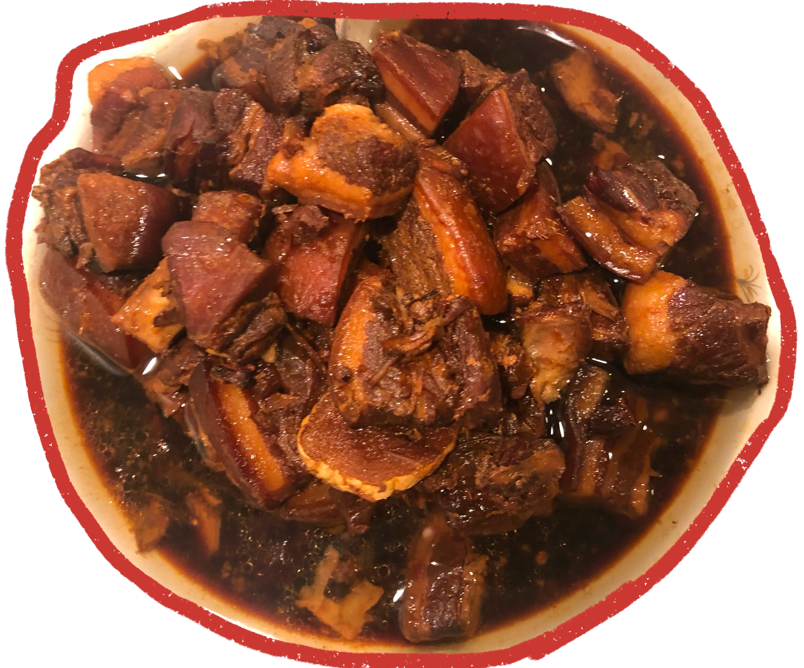

Sweet and Sour Pork
Tender pork ribs glazed in a sticky-sweet sauce made with dark soy sauce and Chinese black vinegar - a Shanghai favorite.
Listen to my mom share this recipe:
Ingredients
6 Servings
2 pounds
Pork ribs
1 tbsp
Light soy sauce
2 tbsp
Shaoxing wine (divided)
3 tbsp
Oil (divided)
8 slices
Ginger, thin slices
4
Scallions (white parts only, chopped)
2 tbsp
Sugar (rock sugar preferred)
2 tsp
Dark soy sauce
1 tbsp
Chinese black vinegar
2 cups
Water
1 to taste
Toasted sesame seeds (optional)
Instructions
- Clean the ribs and pat them dry with a paper towel. Marinate the ribs with 1 tablespoon light soy sauce and 1 tablespoon shaoxing wine for 15 minutes.
- Heat 1 tablespoon oil in a flat bottomed pan over medium heat and brown the ribs on all sides. Set aside on a plate.
- Heat another tablespoon of oil in a clean wok over medium heat, and cook the ginger and scallions until fragrant, about 3 minutes. Take them out of the wok and set aside. Add another tablespoon of oil, and with the wok on low heat, add the sugar. Stir and let it melt. Add the ribs and coat them with the melted sugar. Turn off the heat.
- Add the second tablespoon of shaoxing wine, dark soy sauce, vinegar, water, and the cooked ginger and scallion. Turn up the heat and bring everything to a boil. Then cover and simmer on low heat for 30 minutes, stirring occasionally to prevent sticking. After 30 minutes, if there's still too much liquid in the pot, take off the lid and turn up the heat, stirring continuously until the sauce has thickened and the ribs are coated and sticky.
- It's best to serve these ribs at room temperature. Garnish with toasted sesame seeds if desired.